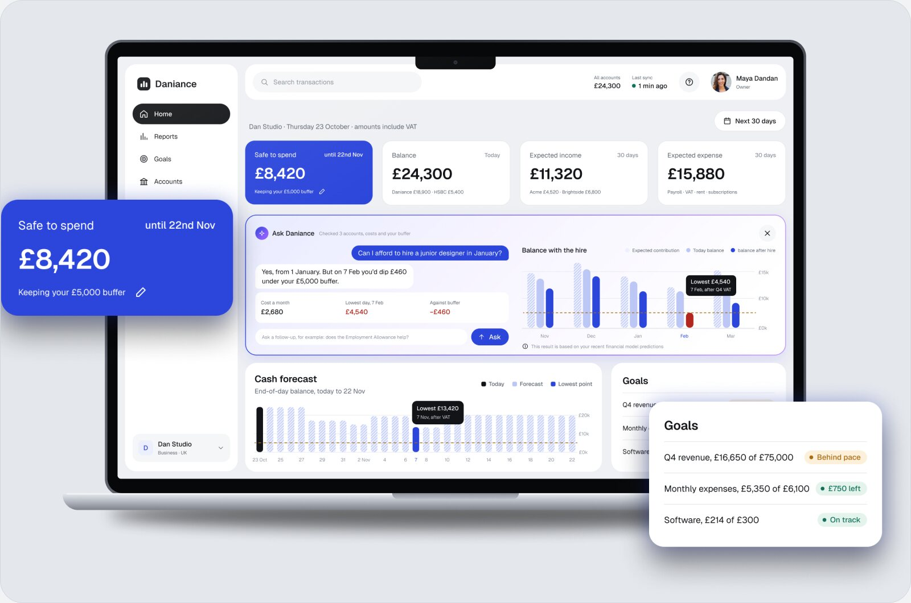
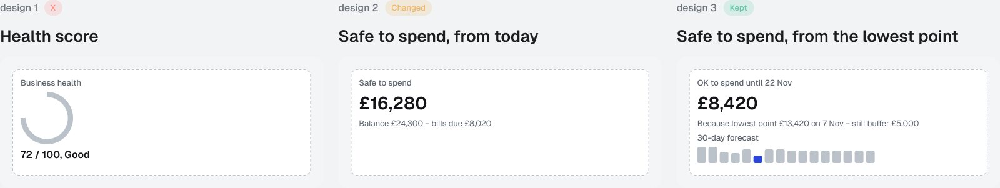
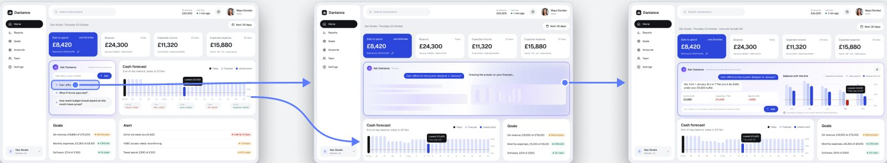
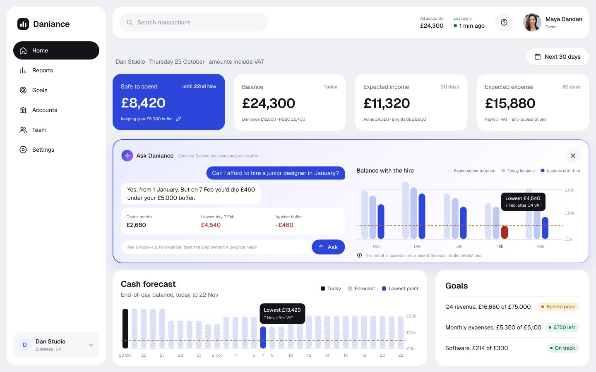
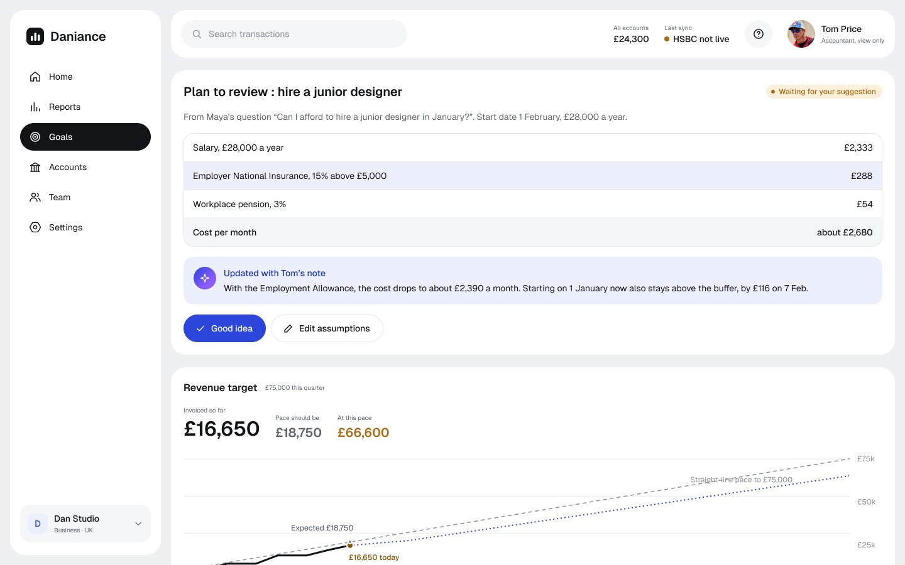
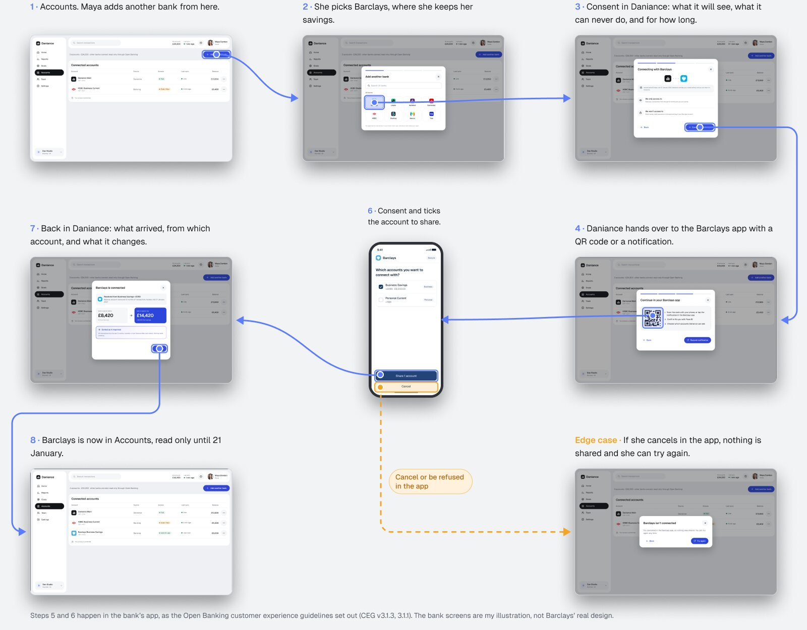
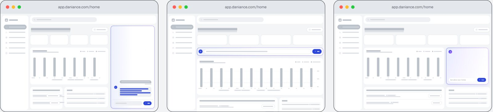
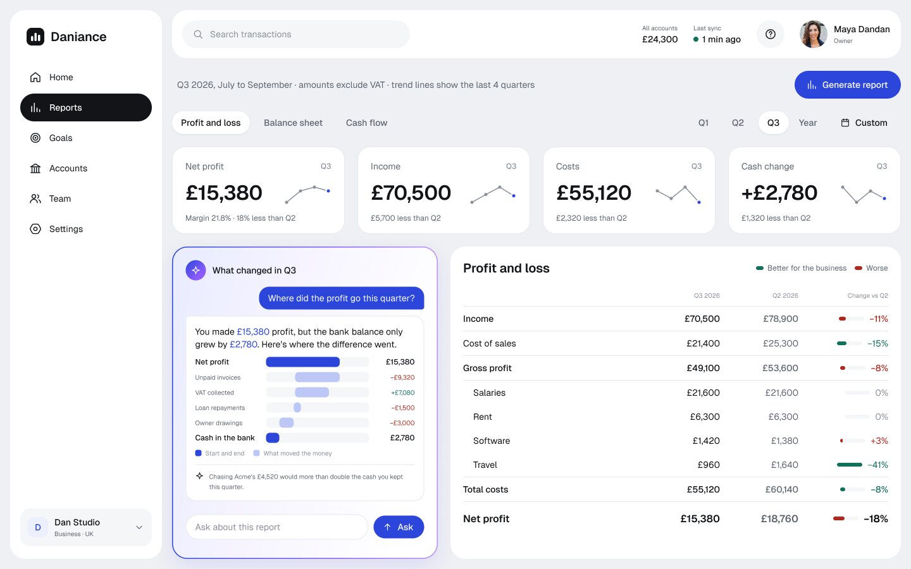
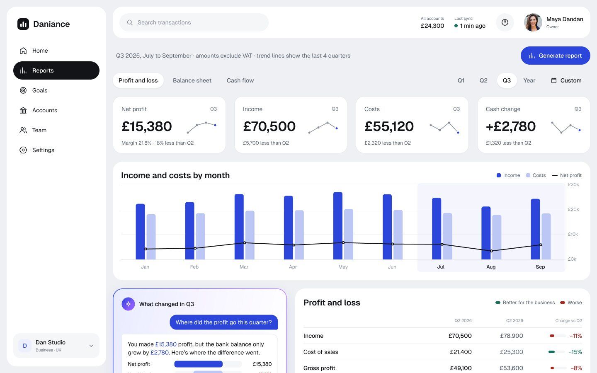

Fintech earned people’s trust by letting them see what happened, see why, follow it backwards, and stop it. I wanted to see if an AI that answers money questions could earn trust the same way.
A finance dashboard for small business owners, where an AI answers “Can I afford to hire someone?” on the owner’s own forecast.

Small business owners make money decisions before the numbers are clear. I picked the one that keeps them up at night: can I afford to hire someone?
A web app in Figma with Home, Reports, Goals and a bank connection, and one AI that changes size depending on the page. Research came from published surveys and accountants’ forums.
A five-day practice in AI and fintech. The last section is what I’d test with owners first.
On my homepage I wrote that trust in AI gets earned the way fintech earned it. Daniance is where I tried that idea on money itself. The full case study lives in Figma ↗.
Maya runs a four-person design studio. Her bank says £24,300. Payroll, rent and a VAT bill go out before two clients pay, and she wants to hire a junior designer in January. She needs more than a balance or a profit figure to answer that.
She isn’t unusual. Half of small business owners struggle to read their own numbers (Xero, 2024), and 56% make decisions on incomplete information every month (Digits, 2021).
I drew the summary three times before adding any AI. A health score raised the question “72 out of what?”. Balance minus bills covered today only. The version I kept finds the lowest point in the next 30 days and keeps a £5,000 buffer, so “safe to spend” has already counted payroll and VAT.

I held the assistant to the same four rules I use for anything that acts on someone’s behalf.
Maya taps a suggested question. The card opens across the row, keeps the same height so the rest of the dashboard stays on screen, and lists what it’s checking while it draws the answer.

The answer sits on her own forecast: a one-line verdict, the risk (on 7 February she’d dip £460 under her buffer), three numbers, and the sources underneath. If a bank hasn’t synced, the answer is marked as a draft.

Saving the answer turns it into a hiring plan that Tom, her accountant, can review. His note on the Employment Allowance brings the cost down to about £2,390 a month, and the plan shows where that came from.

Bringing in another bank is modelled on the UK Open Banking customer experience guidelines: consent in Daniance, then Face ID and the choice of accounts inside the bank’s own app. Access is read only for 90 days, she can stop it any time, and if she cancels, nothing is shared.

I tried the assistant in three places. A chat panel was clear but took a third of the screen. An answer inside Home pushed the forecast below the fold. I kept a narrow card that opens across its row when asked.

Then each page got its own size. Owners come to Home for the whole picture, so there the AI opens up and explains. In Reports it stays a card beside the detail, and in Goals it only suggests.
Tom reads Reports too, so the page keeps the profit and loss table he already knows. Accountants read a change as favourable or adverse whatever its sign, so I coloured each change by what it means for the business: costs going down show green. Each KPI card carries a small trend for the last four quarters.


The next step is real owners. I’d run one task per flow with UK small business owners and measure two things: the time from opening Home to a confident answer, and how much they trust the reply on a 1 to 5 scale.